MatrixPotential1S¶
About the MatrixPotential1S class¶
The WaveBlocks Project
@author: R. Bourquin @copyright: Copyright (C) 2010, 2011, 2012 R. Bourquin @license: Modified BSD License
Inheritance diagram¶
Class documentation¶
- class WaveBlocks.MatrixPotential1S(expression, variables)¶
This class represents a scalar potential
 . The potential is given as an
analytical 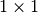 matrix expression. Some symbolic calculations with
the potential are supported. For example calculation of eigenvalues and
exponentials and numerical evaluation. Further, there are methods for
splitting the potential into a Taylor expansion and for basis transformations
between canonical and eigenbasis.
. The potential is given as an
analytical 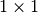 matrix expression. Some symbolic calculations with
the potential are supported. For example calculation of eigenvalues and
exponentials and numerical evaluation. Further, there are methods for
splitting the potential into a Taylor expansion and for basis transformations
between canonical and eigenbasis.- calculate_eigenvalues()¶
Calculate the eigenvalue 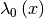 of the potential
.
In the scalar case this is just the matrix entry 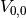.Note
This function is idempotent and the eigenvalues are memoized for later reuse.
- calculate_eigenvectors()¶
Calculate the eigenvector 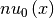 of the potential
.
In the scalar case this is just the value  .
.Note
This function is idempotent and the eigenvectors are memoized for later reuse.
- calculate_exponential(factor=1)¶
Calculate the matrix exponential 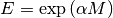. In this case the matrix is of size thus the exponential simplifies to the scalar exponential function.
Parameters: factor – A prefactor  in the exponential.
in the exponential.Note
This function is idempotent.
- calculate_hessian()¶
Calculate the hessian matrix for component of the potential. For potentials which depend only one variable
 , this equals the second derivative.
, this equals the second derivative.
- calculate_jacobian()¶
Calculate the jacobian matrix for the component of the potential. For potentials which depend only one variable
, this equals the first derivative.
- calculate_local_quadratic(diagonal_component=None)¶
Calculate the local quadratic approximation 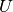 of the potential’s eigenvalue
 .
.Parameters: diagonal_component – Dummy parameter that has no effect here. Note
This function is idempotent.
- calculate_local_remainder(diagonal_component=None)¶
Calculate the non-quadratic remainder
 of the quadratic
approximation of the potential’s eigenvalue .
This function is used for the homogeneous case and takes into account
the leading component 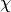.
of the quadratic
approximation of the potential’s eigenvalue .
This function is used for the homogeneous case and takes into account
the leading component 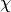.Parameters: diagonal_component – Dummy parameter that has no effect here. Note
This function is idempotent.
- evaluate_at(nodes, component=0, as_matrix=False)¶
Evaluate the potential matrix elementwise at some given grid nodes 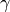.
Parameters: - nodes – The grid nodes we want to evaluate the potential at.
- component – The component
 that gets evaluated or ‘None’ to evaluate all.
that gets evaluated or ‘None’ to evaluate all. - as_matrix – Dummy parameter which has no effect here.
Returns: A list with the single entry evaluated at the nodes.
- evaluate_eigenvalues_at(nodes, component=None, as_matrix=False)¶
Evaluate the eigenvalue at some grid nodes .
Parameters: - nodes – The grid nodes we want to evaluate the eigenvalue at.
- diagonal_component – Dummy parameter that has no effect here.
- as_matrix – Dummy parameter which has no effect here.
Returns: A list with the single eigenvalue evaluated at the nodes.
- evaluate_eigenvectors_at(nodes)¶
Evaluate the eigenvector at some grid nodes .
Parameters: nodes – The grid nodes we want to evaluate the eigenvector at. Returns: A list with the eigenvector evaluated at the given nodes.
- evaluate_exponential_at(nodes)¶
Evaluate the exponential of the potential matrix
 at some grid nodes .
at some grid nodes .Parameters: nodes – The grid nodes we want to evaluate the exponential at. Returns: The numerical approximation of the matrix exponential at the given grid nodes.
- evaluate_hessian_at(nodes, component=None)¶
Evaluate the potential’s hessian at some grid nodes .
Parameters: - nodes – The grid nodes the hessian gets evaluated at.
- component – Dummy parameter that has no effect here.
Returns: The value of the potential’s hessian at the given nodes.
- evaluate_jacobian_at(nodes, component=None)¶
Evaluate the potential’s jacobian at some grid nodes .
Parameters: - nodes – The grid nodes the jacobian gets evaluated at.
- component – Dummy parameter that has no effect here.
Returns: The value of the potential’s jacobian at the given nodes.
- evaluate_local_quadratic_at(nodes, diagonal_component=None)¶
Numerically evaluate the local quadratic approximation of the potential’s eigenvalue
at the given grid nodes .
This function is used for the homogeneous case.Parameters: nodes – The grid nodes we want to evaluate the quadratic approximation at. Returns: An array containing the values of at the nodes .
- evaluate_local_remainder_at(position, nodes, diagonal_component=None, component=None)¶
Numerically evaluate the non-quadratic remainder
of the quadratic
approximation of the potential’s eigenvalue at the given nodes .
This function is used for the homogeneous and the inhomogeneous case and
just evaluates the remainder .Parameters: - position – The point
 where the Taylor series is computed.
where the Taylor series is computed. - nodes – The grid nodes we want to evaluate the potential at.
- component – Dummy parameter that has no effect here.
Returns: A list with a single entry consisting of an array containing the values of
at the nodes .- position – The point
- get_number_components()¶
Returns: The number  of components the potential supports. In the one dimensional case, it’s just 1.
of components the potential supports. In the one dimensional case, it’s just 1.
- potential = None¶
The matrix of the potential
.
- project_to_canonical(nodes, values, basis=None)¶
Project a given vector from the potential’s eigenbasis to the canonical basis.
Parameters: - nodes – The grid nodes for the pointwise transformation.
- values – The list of vectors 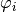 containing the values we want to transform.
- basis – A list of basis vectors 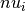. Allows to use this function for external data, similar to a static function.
Returns: This method does nothing and returns the values.
- project_to_eigen(nodes, values, basis=None)¶
Project a given vector from the canonical basis to the eigenbasis of the potential.
Parameters: - nodes – The grid nodes for the pointwise transformation.
- values – The list of vectors containing the values we want to transform.
- basis – A list of basisvectors . Allows to use this function for external data, similar to a static function.
Returns: This method does nothing and returns the values.
- x = None¶
The variable
that represents position space.